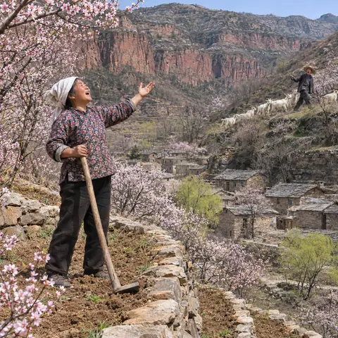
十大雅集 / 清韵流声
II
清韵流声
传统音乐
收录国家级代表性项目 189 项、431 子项，申报地区涉及 33 个省级行政区，另有中直单位申报的 1 子项。子项最多的地区：新疆维吾尔自治区（28）、湖北省（28）、内蒙古自治区（23）。
本馆《太守行纪》剧集
筹备中
传承人
筹备中
项目档案库
189 项、431 子项
（本页配图如无特别标注，均为 AI 生成的示意图，非实拍。）
第 1 / 4 页（II-1 至 II-60）
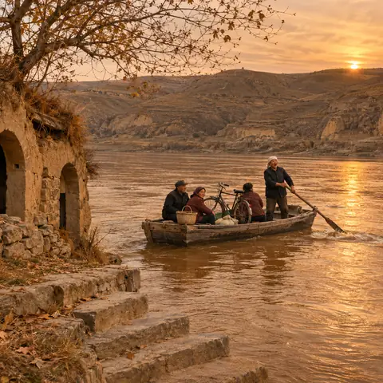
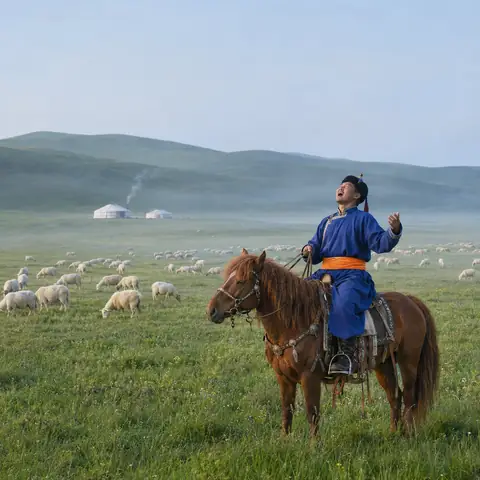
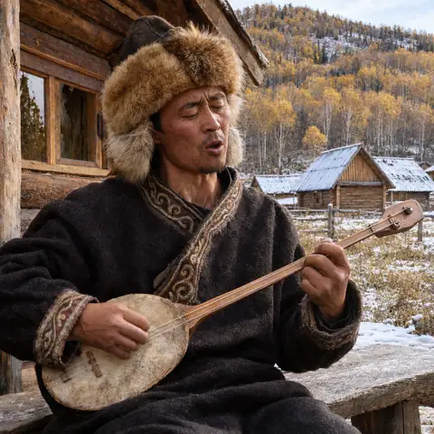
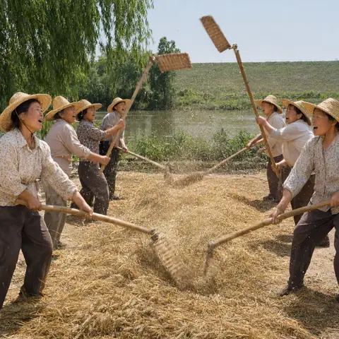
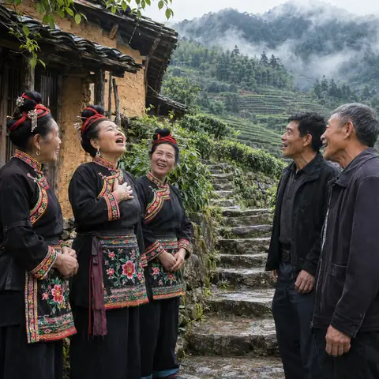
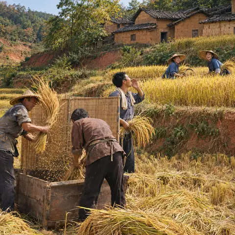
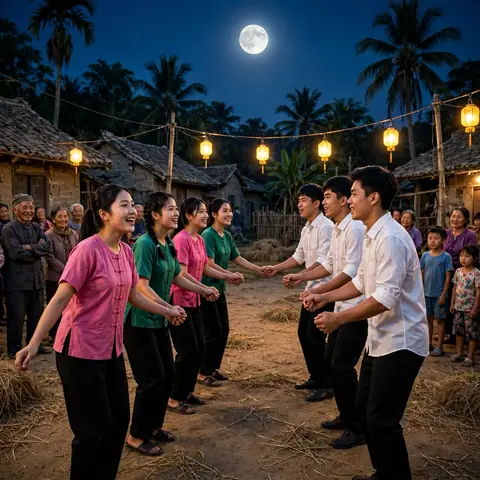
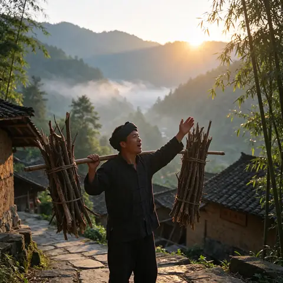
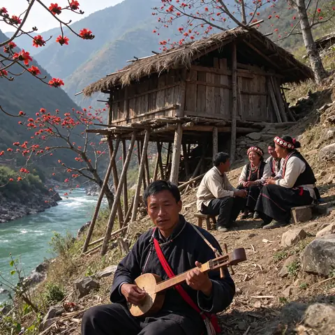
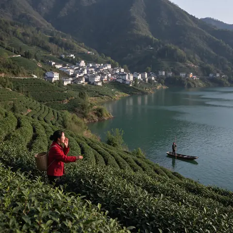
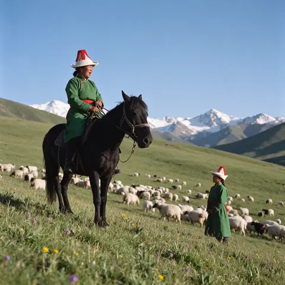
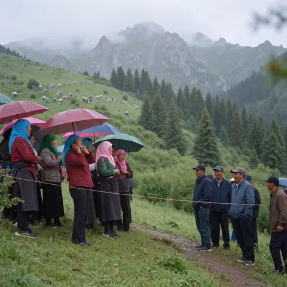
II-2011 项子项目花儿
甘肃省 · 青海省 · 宁夏回族自治区 等 4 地
展开档案明细11 条
- 花儿（莲花山花儿会）甘肃省康乐县2006 第一批 · 新增项目官方页 →
- 花儿（松鸣岩花儿会）甘肃省和政县2006 第一批 · 新增项目官方页 →
- 花儿（二郎山花儿会）甘肃省岷县2006 第一批 · 新增项目官方页 →
- 花儿（老爷山花儿会）青海省大通回族土族自治县2006 第一批 · 新增项目官方页 →
- 花儿（丹麻土族花儿会）青海省互助土族自治县2006 第一批 · 新增项目官方页 →
- 花儿（瞿昙寺花儿会）青海省乐都县2006 第一批 · 新增项目官方页 →
- 花儿（七里寺花儿会）青海省民和回族土族自治县2006 第一批 · 新增项目官方页 →
- 花儿（宁夏回族山花儿）宁夏回族自治区2006 第一批 · 新增项目官方页 →
- 花儿（新疆花儿）新疆维吾尔自治区昌吉回族自治州2008 第二批 · 扩展项目官方页 →
- 花儿（新疆花儿）新疆维吾尔自治区巴音郭楞蒙古自治州2008 第二批 · 扩展项目官方页 →
- 花儿（张家川花儿）甘肃省张家川回族自治县2014 第四批 · 扩展项目官方页 →
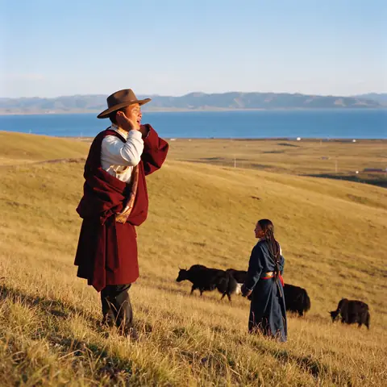
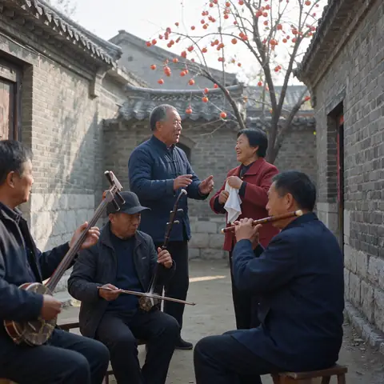
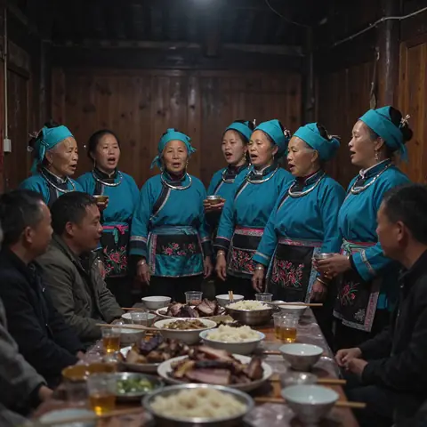
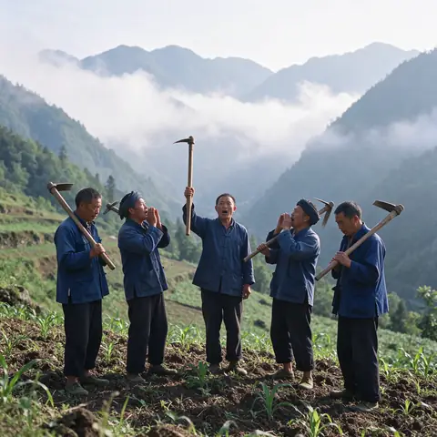
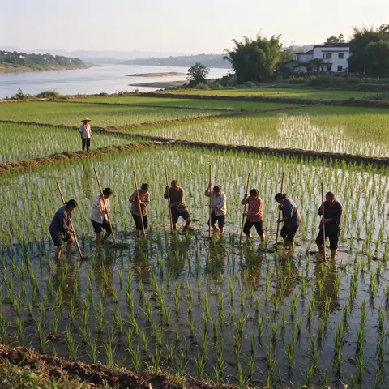
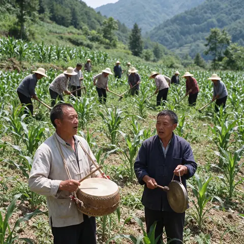
II-279 项子项目薅草锣鼓
四川省 · 江西省 · 湖北省 等 4 地
展开档案明细9 条
- 川北薅草锣鼓四川省青川县2006 第一批 · 新增项目官方页 →
- 薅草锣鼓（武宁打鼓歌）江西省武宁县2008 第二批 · 扩展项目官方页 →
- 薅草锣鼓（宜昌薅草锣鼓）湖北省宜昌市2008 第二批 · 扩展项目官方页 →
- 薅草锣鼓（五峰土家族薅草锣鼓）湖北省五峰土家族自治县2008 第二批 · 扩展项目官方页 →
- 薅草锣鼓（兴山薅草锣鼓）湖北省兴山县2008 第二批 · 扩展项目官方页 →
- 薅草锣鼓（宣恩薅草锣鼓）湖北省宣恩县2008 第二批 · 扩展项目官方页 →
- 薅草锣鼓（长阳山歌）湖北省长阳土家族自治县2008 第二批 · 扩展项目官方页 →
- 薅草锣鼓（川东土家族薅草锣鼓）四川省宣汉县2008 第二批 · 扩展项目官方页 →
- 薅草锣鼓（金湖秧歌）江苏省金湖县2014 第四批 · 扩展项目官方页 →
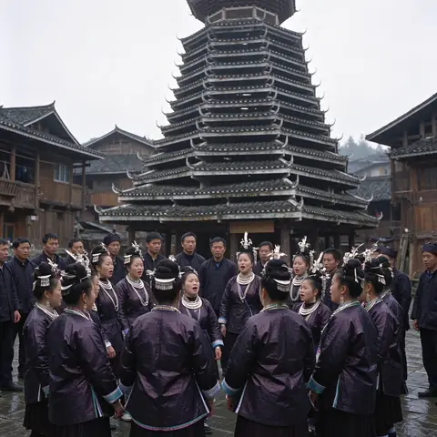
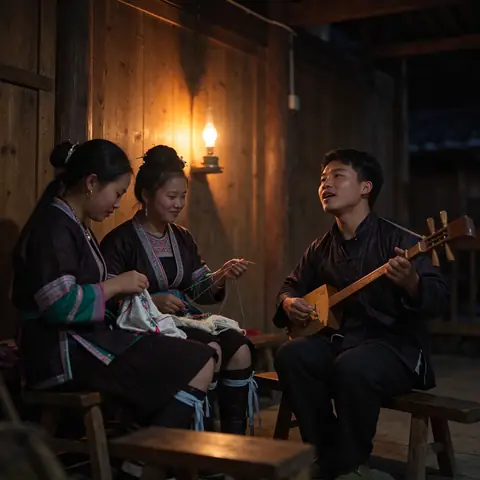
- II-3010 项子项目
多声部民歌
云南省 · 内蒙古自治区 · 广西壮族自治区 等 5 地
展开档案明细10 条
- 哈尼族多声部民歌云南省红河哈尼族彝族自治州2006 第一批 · 新增项目官方页 →
- 多声部民歌（潮尔道-蒙古族合声演唱）内蒙古自治区锡林浩特市2008 第二批 · 扩展项目官方页 →
- 多声部民歌（瑶族蝴蝶歌）广西壮族自治区富川瑶族自治县2008 第二批 · 扩展项目官方页 →
- 多声部民歌（壮族三声部民歌）广西壮族自治区马山县2008 第二批 · 扩展项目官方页 →
- 多声部民歌（羌族多声部民歌）四川省松潘县2008 第二批 · 扩展项目官方页 →
- 多声部民歌（硗碛多声部民歌）四川省雅安市2008 第二批 · 扩展项目官方页 →
- 多声部民歌（苗族多声部民歌）贵州省台江县2008 第二批 · 扩展项目官方页 →
- 多声部民歌（苗族多声部民歌）贵州省剑河县2008 第二批 · 扩展项目官方页 →
- 多声部民歌（潮尔道-阿巴嘎潮尔）内蒙古自治区阿巴嘎旗2011 第三批 · 扩展项目官方页 →
- 多声部民歌（阿尔麦多声部民歌）四川省黑水县2014 第四批 · 扩展项目官方页 →
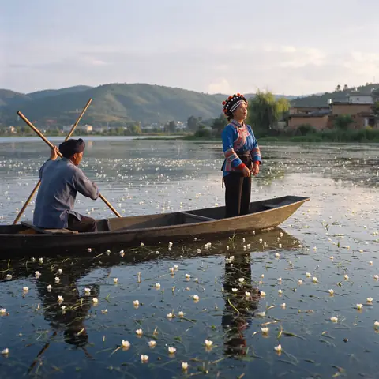
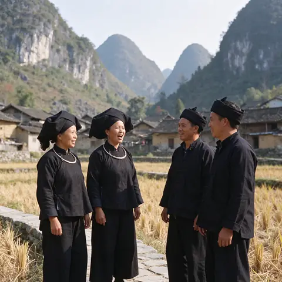
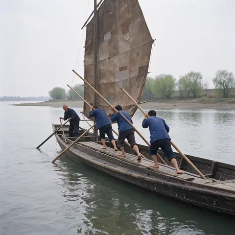
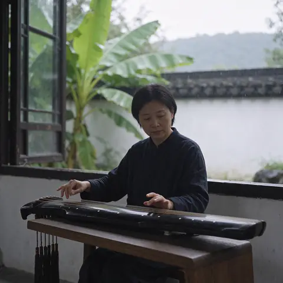
II-3412 项子项目古琴艺术
中直单位 · 江苏省 · 浙江省 等 8 地
展开档案明细12 条
- 中国艺术研究院2006 第一批 · 新增项目官方页 →
- 古琴艺术（虞山琴派）江苏省常熟市2008 第二批 · 扩展项目官方页 →
- 古琴艺术（广陵琴派）江苏省扬州市2008 第二批 · 扩展项目官方页 →
- 古琴艺术（金陵琴派）江苏省南京市2008 第二批 · 扩展项目官方页 →
- 古琴艺术（梅庵琴派）江苏省南通市2008 第二批 · 扩展项目官方页 →
- 古琴艺术（梅庵琴派）江苏省镇江市2008 第二批 · 扩展项目官方页 →
- 古琴艺术（浙派）浙江省杭州市2008 第二批 · 扩展项目官方页 →
- 古琴艺术（诸城派）山东省诸城市2008 第二批 · 扩展项目官方页 →
- 古琴艺术（岭南派）广东省广州市2008 第二批 · 扩展项目官方页 →
- 北京市大兴区2014 第四批 · 扩展项目官方页 →
- 香港特别行政区2014 第四批 · 扩展项目官方页 →
- 陕西省2021 第五批 · 扩展项目官方页 →
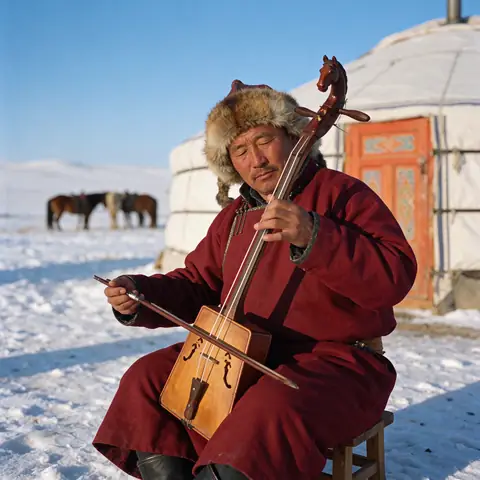
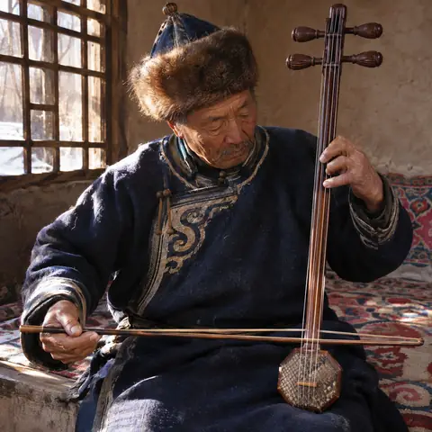
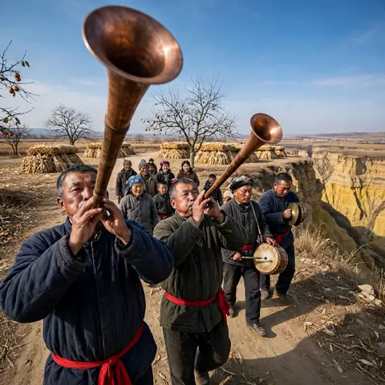
II-3727 项子项目唢呐艺术
河南省 · 甘肃省 · 河北省 等 15 地
展开档案明细27 条
- 河南省沁阳市2006 第一批 · 新增项目官方页 →
- 甘肃省庆阳市2006 第一批 · 新增项目官方页 →
- 唢呐艺术（唐山花吹）河北省曹妃甸区2008 第二批 · 扩展项目官方页 →
- 唢呐艺术（丰宁满族吵子会）河北省丰宁满族自治县2008 第二批 · 扩展项目官方页 →
- 唢呐艺术（晋北鼓吹）山西省阳高县2008 第二批 · 扩展项目官方页 →
- 唢呐艺术（上党八音会）山西省长子县2008 第二批 · 扩展项目官方页 →
- 唢呐艺术（上党乐户班社）山西省壶关县2008 第二批 · 扩展项目官方页 →
- 唢呐艺术（晋北鼓吹）山西省忻州市2008 第二批 · 扩展项目官方页 →
- 唢呐艺术（丹东鼓乐）辽宁省丹东市2008 第二批 · 扩展项目官方页 →
- 唢呐艺术（杨小班鼓吹乐棚）黑龙江省肇州县2008 第二批 · 扩展项目官方页 →
- 唢呐艺术（于都唢呐公婆吹）江西省于都县2008 第二批 · 扩展项目官方页 →
- 唢呐艺术（万载得胜鼓）江西省万载县2008 第二批 · 扩展项目官方页 →
- 唢呐艺术（邹城平派鼓吹乐）山东省邹城市2008 第二批 · 扩展项目官方页 →
- 唢呐艺术（沮水呜音）湖北省保康县2008 第二批 · 扩展项目官方页 →
- 唢呐艺术（呜音喇叭）湖北省南漳县2008 第二批 · 扩展项目官方页 →
- 唢呐艺术（远安呜音）湖北省远安县2008 第二批 · 扩展项目官方页 →
- 唢呐艺术（青山唢呐）湖南省湘潭县2008 第二批 · 扩展项目官方页 →
- 唢呐艺术（永城吹打）重庆市綦江区2008 第二批 · 扩展项目官方页 →
- 唢呐艺术（绥米唢呐）陕西省绥德县2008 第二批 · 扩展项目官方页 →
- 唢呐艺术（绥米唢呐）陕西省米脂县2008 第二批 · 扩展项目官方页 →
- 唢呐艺术（徐州鼓吹乐）江苏省徐州市2011 第三批 · 扩展项目官方页 →
- 唢呐艺术（砀山唢呐）安徽省宿州市2011 第三批 · 扩展项目官方页 →
- 唢呐艺术（长汀公嫲吹）福建省长汀县2011 第三批 · 扩展项目官方页 →
- 唢呐艺术（临县大唢呐）山西省临县2014 第四批 · 扩展项目官方页 →
- 唢呐艺术（灵璧菠林喇叭）安徽省灵璧县2014 第四批 · 扩展项目官方页 →
- 唢呐艺术（五台八大套）山西省忻州市五台县2021 第五批 · 扩展项目官方页 →
- 唢呐艺术（子长唢呐）陕西省延安市子长市2021 第五批 · 扩展项目官方页 →
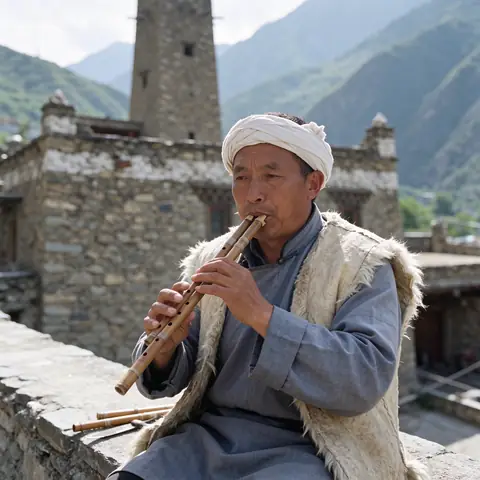
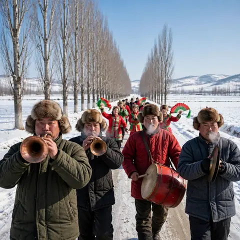
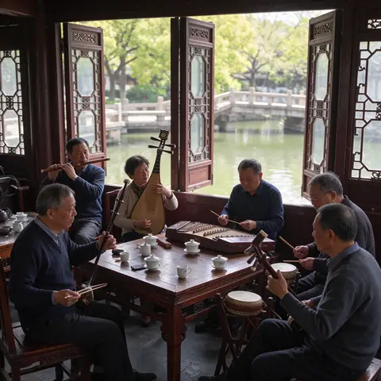
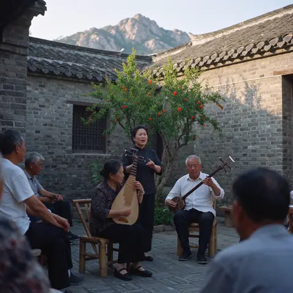
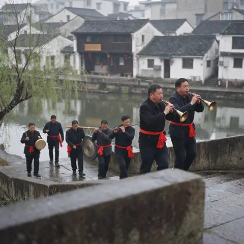
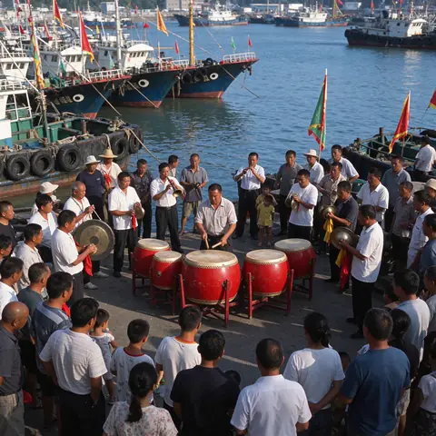
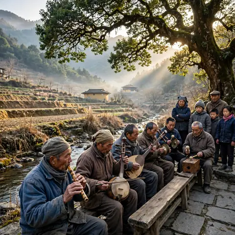
II-449 项子项目十番音乐
福建省 · 江苏省 · 浙江省 等 5 地
展开档案明细9 条
- 十番音乐（闽西客家十番音乐）福建省龙岩市2006 第一批 · 新增项目官方页 →
- 十番音乐（茶亭十番音乐）福建省福州市2006 第一批 · 新增项目官方页 →
- 十番音乐（楚州十番锣鼓）江苏省淮安市2008 第二批 · 扩展项目官方页 →
- 十番音乐（邵伯锣鼓小牌子）江苏省江都市2008 第二批 · 扩展项目官方页 →
- 十番音乐（楼塔细十番）浙江省杭州市2008 第二批 · 扩展项目官方页 →
- 十番音乐（遂昌昆曲十番）浙江省遂昌县2008 第二批 · 扩展项目官方页 →
- 十番音乐（黄石惠洋十音）福建省莆田市2008 第二批 · 扩展项目官方页 →
- 十番音乐（佛山十番）广东省佛山市2008 第二批 · 扩展项目官方页 →
- 十番音乐（海南八音器乐）海南省海口市2008 第二批 · 扩展项目官方页 →
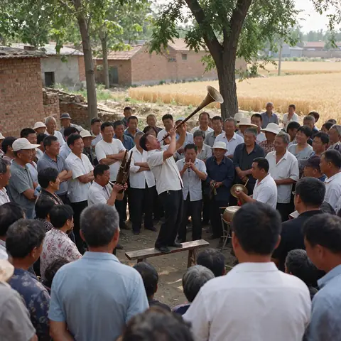
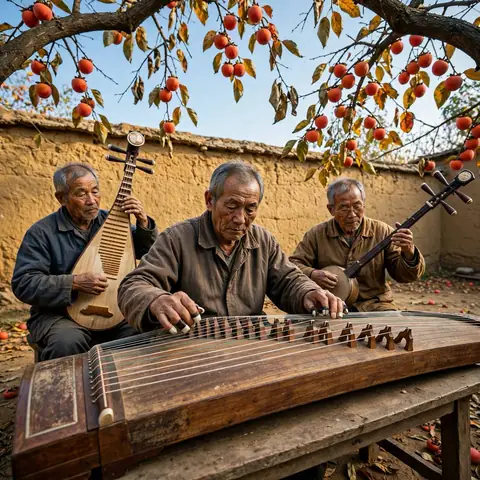
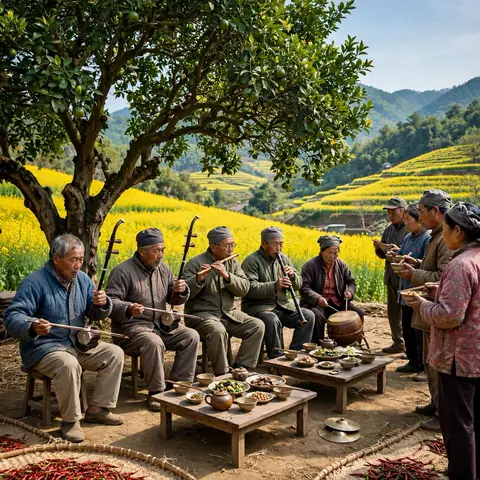
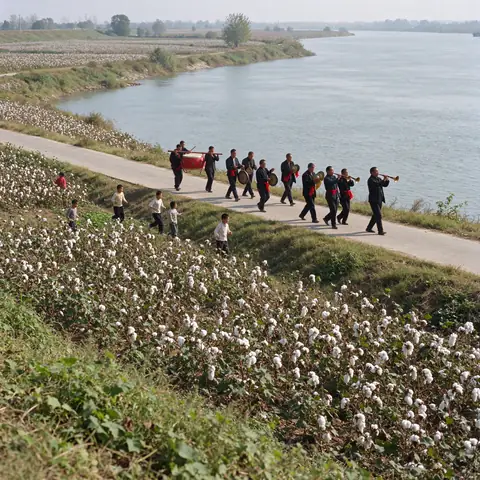
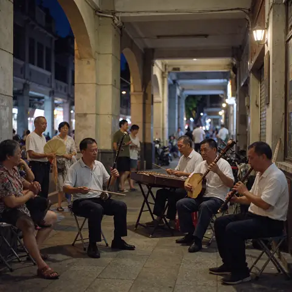
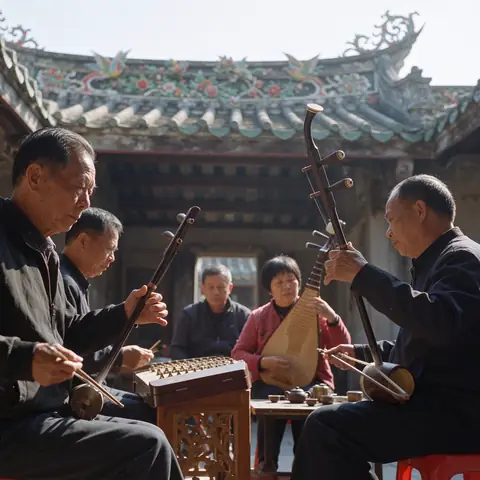
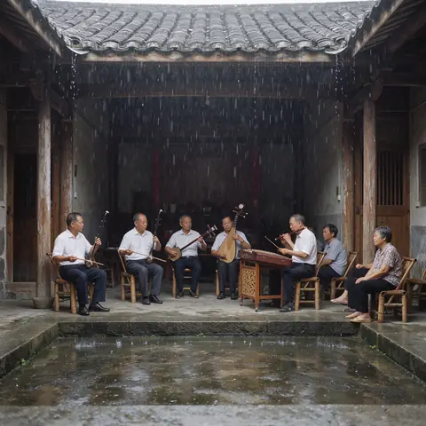
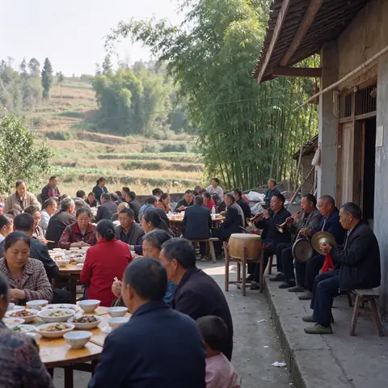
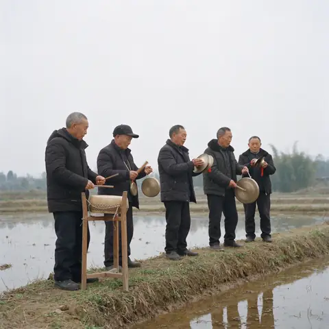
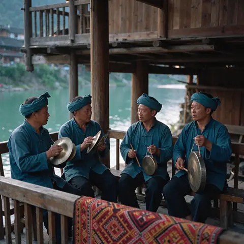
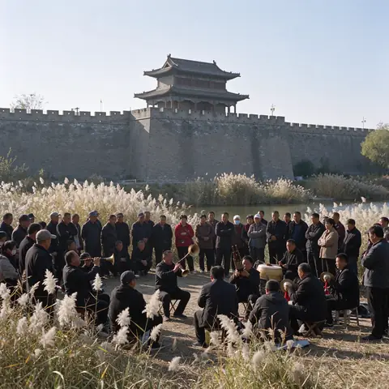
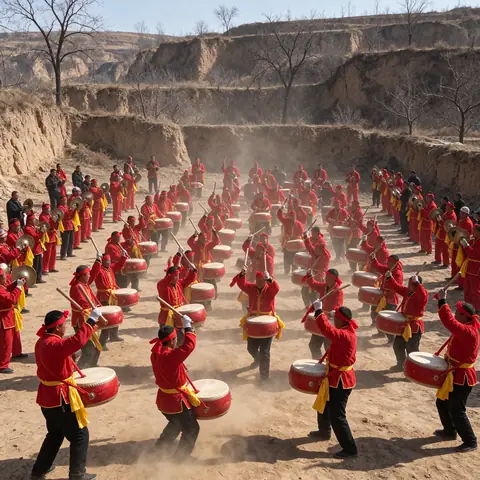
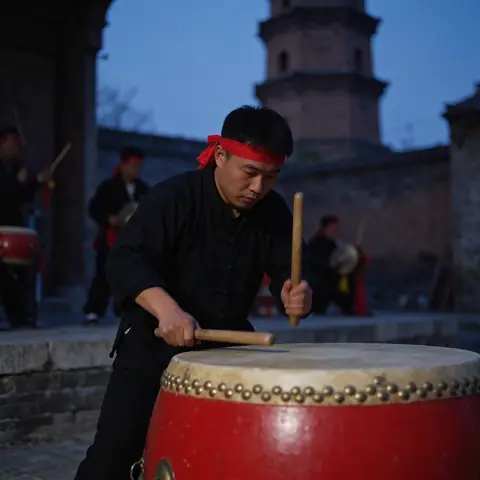
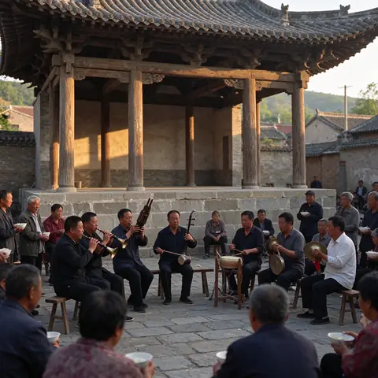
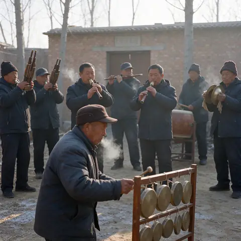
II-5916 项子项目冀中笙管乐
河北省 · 北京市
展开档案明细16 条
- 冀中笙管乐（屈家营音乐会）河北省固安县2006 第一批 · 新增项目官方页 →
- 冀中笙管乐（高洛音乐会）河北省涞水县2006 第一批 · 新增项目官方页 →
- 冀中笙管乐（高桥音乐会）河北省霸州市2006 第一批 · 新增项目官方页 →
- 冀中笙管乐（胜芳音乐会）河北省霸州市2006 第一批 · 新增项目官方页 →
- 冀中笙管乐（白庙村音乐会）北京市大兴区2008 第二批 · 扩展项目官方页 →
- 冀中笙管乐（雄县古乐）河北省雄县2008 第二批 · 扩展项目官方页 →
- 冀中笙管乐（小冯村音乐会）河北省固安县2008 第二批 · 扩展项目官方页 →
- 冀中笙管乐（张庄音乐会）河北省霸州市2008 第二批 · 扩展项目官方页 →
- 冀中笙管乐（军卢村音乐会）河北省廊坊市安次区2008 第二批 · 扩展项目官方页 →
- 冀中笙管乐（东张务音乐会）河北省廊坊市安次区2008 第二批 · 扩展项目官方页 →
- 冀中笙管乐（南响口梵呗音乐会）河北省廊坊市安次区2008 第二批 · 扩展项目官方页 →
- 冀中笙管乐（里东庄音乐老会）河北省文安县2008 第二批 · 扩展项目官方页 →
- 冀中笙管乐（辛安庄民间音乐会）河北省任丘市2008 第二批 · 扩展项目官方页 →
- 冀中笙管乐（安新县圈头村音乐会）河北省安新县2008 第二批 · 扩展项目官方页 →
- 冀中笙管乐（东韩村拾幡古乐）河北省易县2008 第二批 · 扩展项目官方页 →
- 冀中笙管乐（子位吹歌）河北省定州市2008 第二批 · 扩展项目官方页 →
名录数据来源：中国非物质文化遗产网